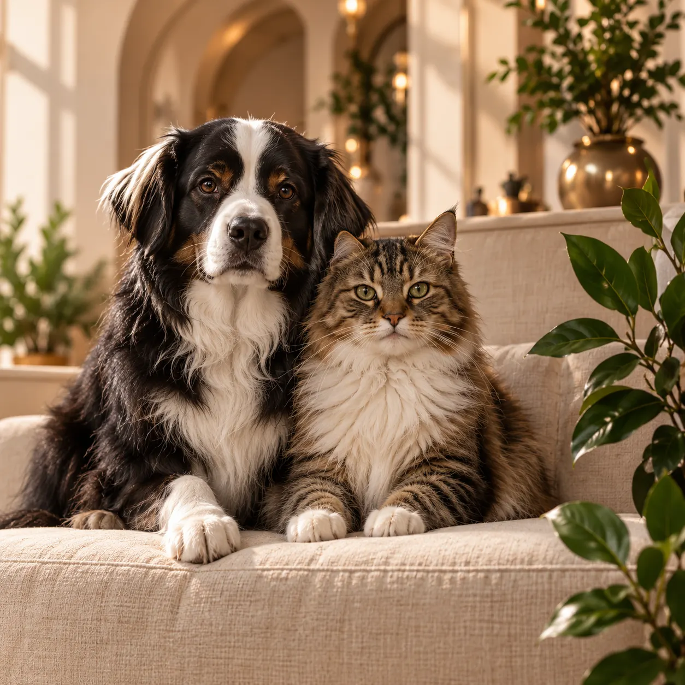

Často kladené otázky
Na co se nás naši klienti nejčastěji ptají?
Jak probíhá první návštěva?
Nejprve si popovídáme o vašem mazlíčkovi, jeho zdravotním stavu a zvyklostech. Poté následuje vyšetření a společně probereme další péči. S sebou vezměte očkovací průkaz a dostupné zprávy z předchozích vyšetření.
Je nutné se objednat předem?
Na běžná vyšetření se prosím objednejte předem. U akutních obtíží nejprve zavolejte, abychom vám mohli doporučit další postup.
Jaké platební metody přijímáte?
Možnosti platby si prosím ověřte při objednání.
Poskytujete pohotovostní péči?
V předloze je uvedena nonstop pohotovost. Před příjezdem je vždy potřeba telefonicky ověřit dostupnost ošetření.
Mohu přijít i s exotickým zvířetem?
Při objednání uveďte druh zvířete a důvod návštěvy. Ověříme, zda pro vašeho mazlíčka můžeme zajistit vhodnou péči.
Jak často chodit na preventivní prohlídky?
Vhodnou četnost preventivních prohlídek s vámi lékař probere podle věku, druhu a zdravotního stavu vašeho mazlíčka.
